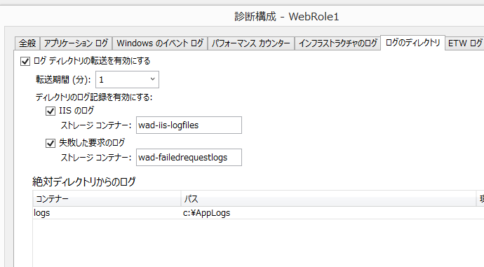

Azure Diagnostics 1.3 PaaS BUGS
更新: 2015/4/17 にリリースされた。Diagnostics Extention 1.4 で下記の問題は修正されました
Azure SDK 2.5 から、Windows Azure Diagnostics (WAD) がVM Extentionになりました。それに伴って、Cloud Service (PaaS)でIISのログ転送と、ローカルストレージのカスタムログ転送が行われないという2つの問題があります。（IaaSでは問題はありません）

※この情報は、2015/4/8 Azure SDK 2.5.1, VM Extention 1.3.1.6 を元にして書いています。
IISのログ転送
デプロイ直後はIISのログ転送が行われず、再起動後に転送が開始されるという問題があります。
原因
WADは起動したときにIIS Management Service経由でIIISログの場所探します。デフォルトでは、この場所は、%SystemDrive%inetpublogsLogFiles に設定されています。PaaSでは WebRoleのIISConfigurator がサービス定義に基いてIISの設定を C:Resourcesdirectory{deploymentid.rolename}.DiagnosticStoreLogFilesWeb へ変更します。その結果、WADの構成が、IISConfigurator の前に実行されると、WADは間違ったディレクトリを監視することになってしまいます。
対策
WADの構成がIISConfiguratorの実行の後に起こればいいので、一度Roleを再起動します。それには、Startup Taskあるいは、Role の OnStartで下記のように処理します。最初の起動の時に、IISConfigurator が行った変更に基いて、2回めの起動でWADが構成を設定します。
{
// Write a RebootFlag.txt file to the %RoleRoot%\Approot\bin folder to track if this VM has rebooted to fix WAD 1.3 IIS logs issue
string path = "RebootFlag.txt";
// If RebootFlag.txt already exists then skip rebooting the VM
if (!System.IO.File.Exists(path))
{
System.IO.File.WriteAllText(path, "Writing RebootFlag at " + DateTime.Now.ToString("O"));
System.Diagnostics.Trace.WriteLine("Rebooting");
System.Diagnostics.Process.Start("shutdown", "/r /t 0");
}
return base.OnStart();
}
この方法だと、ファイルをアプリケーションのディレクトリに作成しているので、インプレースアップグレードの度に再起動がかかります。そのかわり、アクセス権の問題が無いため、elevated する必要がありません。システムドライブや、Cドライブにファイルを作成する、あるいはレジストリにフラグを作成する方法を使うと、再起動は最小限に抑えられますが、.csdef に <Runtime executionContext=”elevated” /> の設定が必要です。
カスタムログ転送
現在のバージョンでは、従来行っていたローカルストレージからのカスタムログ転送は動作しませんので変わりに絶対ディレクトリからの転送を使います。（ちなみにローカルストレージからのカスタムログ転送はVSからの設定も出来ません）
注意点は2点、
- ローカルストレージと違ってquotaが利きません。書き出す量を間違えると、ディスクが溢れて他の動作に影響する可能性があります。
- 絶対ディレクトリにはCドライブを指定しますが、指定ディレクトリには転送したいファイルだけが存在するようにします。
- 絶対ディレクトリを指定した場合、デプロイID毎に別のディレクトリにローカルストレージの領域が取られますが、絶対パスでは同じディレクトリが使われます。
- アクセス権を設定する必要があります。
対策
VSで診断構成のアプリケーションログ転送を開きます。
この設定をしたら、IISのログ転送対策と同じように、RoleのOnStartで、下記の処理を入れます。ここでは、ディレクトリの有無を確認していますが、WADが先に起動した場合は、ディレクトリは作成されています。アクセス権が足りないので追加します。必要なIISのアクセス権については、しばやん雑記：IIS 7 以降でのアプリケーションプールと権限について調べたを参考にしています。
if (Directory.Exists(@"c:\AppLogs"))
Directory.CreateDirectory(@"c:\AppLogs");
System.Diagnostics.Process.Start("icacls", "c:\\AppLogs /grant \"BUILTIN\\IIS_IUSRS:\":(OI)(CI)W");
最後に
最後に上記の問題を合わせたコード例を上げておきます。
var path = @"c:\AppLogs\RebootFlag.txt";
if (!System.IO.File.Exists(path))
{
if (Directory.Exists(@"c:\AppLogs"))
Directory.CreateDirectory(@"c:\AppLogs");
System.Diagnostics.Process.Start("icacls", "c:\\AppLogs /grant BUILTIN\\IIS_IUSRS:(OI)(CI)W");
System.IO.File.WriteAllText(path, "Writing RebootFlag at " + DateTime.Now.ToString("O"));
System.Diagnostics.Trace.WriteLine("Rebooting");
System.Diagnostics.Process.Start("shutdown", "/r /t 0");
}
csdefに、下記のように、 <Runtime executionContext=”elevated” /> を追加します。
<?xml version="1.0" encoding="utf-8"?>
<ServiceDefinition name="AzureCloudService1" xmlns="http://schemas.microsoft.com/ServiceHosting/2008/10/ServiceDefinition" schemaVersion="2014-06.2.4">
<WebRole name="WebRole1" vmsize="Small">
<Runtime executionContext="elevated" />
<Sites>
<Site name="Web">
<Bindings>
<Binding name="Endpoint1" endpointName="Endpoint1" />
</Bindings>
</Site>
</Sites>
<Endpoints>
<InputEndpoint name="Endpoint1" protocol="http" port="80" />
</Endpoints>
<Imports>
<Import moduleName="RemoteAccess" />
<Import moduleName="RemoteForwarder" />
</Imports>
</WebRole>
</ServiceDefinition>
参考
- MSDN ForumCannot configure diagnostics for local resources with SDK 2.5
- Windows Azure - Troubleshooting & DebuggingSDK 2.5 / WAD 1.2 — IIS Logs Not Transferring to Storage in PaaS WebRoles
- Mode 13hAzure SDK 2.5 Diagnostics Bugs
- しばやん雑記IIS 7 以降でのアプリケーションプールと権限について調べた